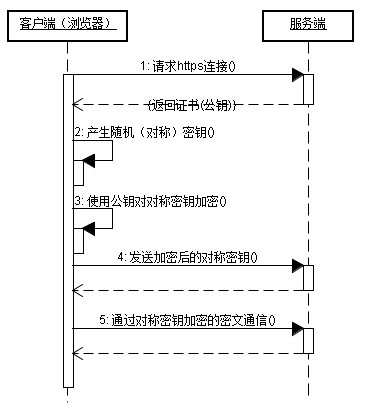

HTTPS：是以安全为目标的HTTP通道，简单讲是HTTP的安全版，即HTTP下加入SSL层，HTTPS的安全基础是SSL，因此加密的详细内容就需要SSL。，SSL依靠证书来验证服务器的身份，并为浏览器和服务器之间的通信加密。
HTTPS协议的主要作用可以分为两种：一种是建立一个信息安全通道，来保证数据传输的安全；另一种就是确认网站的真实性。
客户端在使用HTTPS方式与Web服务器通信时有以下几个步骤，如图所示。
（1）客户使用https的URL访问Web服务器，要求与Web服务器建立SSL连接。
（2）Web服务器收到客户端请求后，会将网站的证书信息（证书中包含公钥）传送一份给客户端。
（3）客户端的浏览器与Web服务器开始协商SSL连接的安全等级，也就是信息加密的等级。
（4）客户端的浏览器根据双方同意的安全等级，建立会话密钥，然后利用网站的公钥将会话密钥加密，并传送给网站。
（5）Web服务器利用自己的私钥解密出会话密钥。
（6）Web服务器利用会话密钥加密与客户端之间的通信。

http2的优点和不同
1,多路复用 http1是单路的
2,二进制分帧
3,首部压缩
4,服务端推送